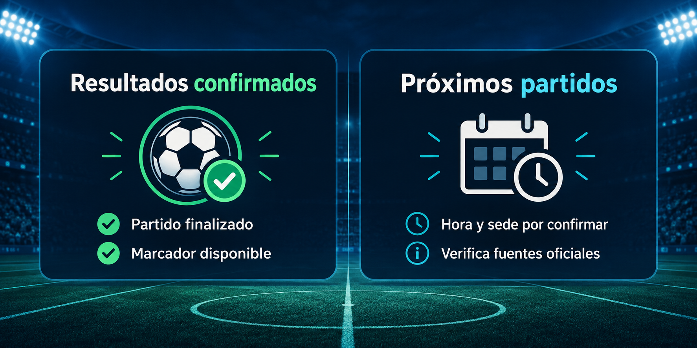

NNecaxa
2 - 4AméricaA
Consulta resultados Liga MX 2026 y partidos finalizados cuando exista un marcador confirmado. Si un dato todavía no está disponible, la página lo indica en lugar de inventarlo.
Se muestran encuentros con estado final y ambos marcadores disponibles, ordenados del más reciente al más antiguo.

El archivo reúne 27 resultados: nueve de cada una de las jornadas 8, 9 y 10. Los marcadores de la Jornada 10 corresponden a partidos disputados del 25 al 27 de septiembre de 2026.
Para seguir el Apertura 2026, revisa el estado del partido y la jornada antes de compartir un marcador. La fecha de corte visible ayuda a distinguir un encuentro finalizado de uno pendiente o reprogramado.
El selector permite consultar una jornada sin mezclarla con otra. Sólo se incluyen partidos con estado final y ambos marcadores disponibles; una hora de inicio pasada no basta para dar un resultado por confirmado.
El archivo no cubre todas las jornadas de la temporada. Mantiene los resultados del corte manual del 29 de septiembre de 2026. Si falta un juego, no se interpreta como empate, cancelación ni derrota: está pendiente de incorporar o verificar.
Un marcador corresponde a un partido; el global de una eliminatoria suma dos encuentros y una tanda de penales se registra por separado. Consulta el formato de la fase final antes de interpretar quién avanza.
Revisión editorial: . Las fechas de corte de las estadísticas se indican por separado.